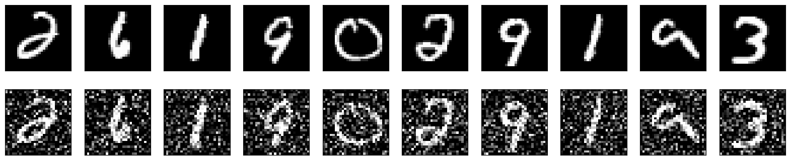
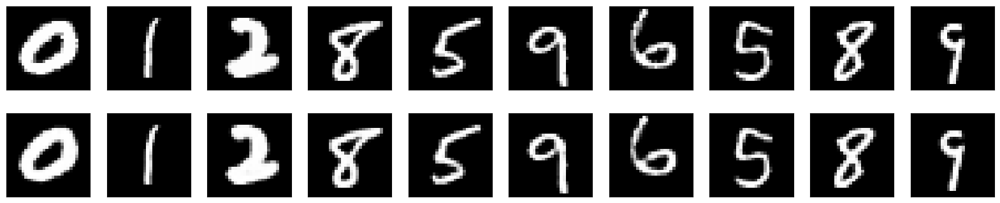
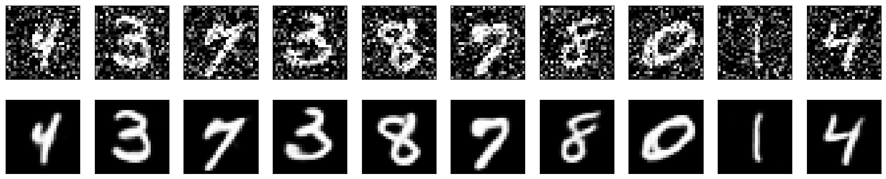

Convolutional autoencoder for image denoising
Author: Santiago L. Valdarrama
Date created: 2021/03/01
Last modified: 2021/03/01
Description: How to train a deep convolutional autoencoder for image denoising.

Introduction
This example demonstrates how to implement a deep convolutional autoencoder for image denoising, mapping noisy digits images from the MNIST dataset to clean digits images. This implementation is based on an original blog post titled Building Autoencoders in Keras by François Chollet.
Setup
import numpy as np
import matplotlib.pyplot as plt
from keras import layers
from keras.datasets import mnist
from keras.models import Model
def preprocess(array):
"""Normalizes the supplied array and reshapes it."""
array = array.astype("float32") / 255.0
array = np.reshape(array, (len(array), 28, 28, 1))
return array
def noise(array):
"""Adds random noise to each image in the supplied array."""
noise_factor = 0.4
noisy_array = array + noise_factor * np.random.normal(
loc=0.0, scale=1.0, size=array.shape
)
return np.clip(noisy_array, 0.0, 1.0)
def display(array1, array2):
"""Displays ten random images from each array."""
n = 10
indices = np.random.randint(len(array1), size=n)
images1 = array1[indices, :]
images2 = array2[indices, :]
plt.figure(figsize=(20, 4))
for i, (image1, image2) in enumerate(zip(images1, images2)):
ax = plt.subplot(2, n, i + 1)
plt.imshow(image1.reshape(28, 28))
plt.gray()
ax.get_xaxis().set_visible(False)
ax.get_yaxis().set_visible(False)
ax = plt.subplot(2, n, i + 1 + n)
plt.imshow(image2.reshape(28, 28))
plt.gray()
ax.get_xaxis().set_visible(False)
ax.get_yaxis().set_visible(False)
plt.show()
Prepare the data
# Since we only need images from the dataset to encode and decode, we
# won't use the labels.
(train_data, _), (test_data, _) = mnist.load_data()
# Normalize and reshape the data
train_data = preprocess(train_data)
test_data = preprocess(test_data)
# Create a copy of the data with added noise
noisy_train_data = noise(train_data)
noisy_test_data = noise(test_data)
# Display the train data and a version of it with added noise
display(train_data, noisy_train_data)
Downloading data from https://storage.googleapis.com/tensorflow/tf-keras-datasets/mnist.npz
11490434/11490434 ━━━━━━━━━━━━━━━━━━━━ 0s 0us/step

Build the autoencoder
We are going to use the Functional API to build our convolutional autoencoder.
input = layers.Input(shape=(28, 28, 1))
# Encoder
x = layers.Conv2D(32, (3, 3), activation="relu", padding="same")(input)
x = layers.MaxPooling2D((2, 2), padding="same")(x)
x = layers.Conv2D(32, (3, 3), activation="relu", padding="same")(x)
x = layers.MaxPooling2D((2, 2), padding="same")(x)
# Decoder
x = layers.Conv2DTranspose(32, (3, 3), strides=2, activation="relu", padding="same")(x)
x = layers.Conv2DTranspose(32, (3, 3), strides=2, activation="relu", padding="same")(x)
x = layers.Conv2D(1, (3, 3), activation="sigmoid", padding="same")(x)
# Autoencoder
autoencoder = Model(input, x)
autoencoder.compile(optimizer="adam", loss="binary_crossentropy")
autoencoder.summary()
Model: "functional_1"
┏━━━━━━━━━━━━━━━━━━━━━━━━━━━━━━━━━┳━━━━━━━━━━━━━━━━━━━━━━━━━━━┳━━━━━━━━━━━━┓ ┃ Layer (type) ┃ Output Shape ┃ Param # ┃ ┡━━━━━━━━━━━━━━━━━━━━━━━━━━━━━━━━━╇━━━━━━━━━━━━━━━━━━━━━━━━━━━╇━━━━━━━━━━━━┩ │ input_layer (InputLayer) │ (None, 28, 28, 1) │ 0 │ ├─────────────────────────────────┼───────────────────────────┼────────────┤ │ conv2d (Conv2D) │ (None, 28, 28, 32) │ 320 │ ├─────────────────────────────────┼───────────────────────────┼────────────┤ │ max_pooling2d (MaxPooling2D) │ (None, 14, 14, 32) │ 0 │ ├─────────────────────────────────┼───────────────────────────┼────────────┤ │ conv2d_1 (Conv2D) │ (None, 14, 14, 32) │ 9,248 │ ├─────────────────────────────────┼───────────────────────────┼────────────┤ │ max_pooling2d_1 (MaxPooling2D) │ (None, 7, 7, 32) │ 0 │ ├─────────────────────────────────┼───────────────────────────┼────────────┤ │ conv2d_transpose │ (None, 14, 14, 32) │ 9,248 │ │ (Conv2DTranspose) │ │ │ ├─────────────────────────────────┼───────────────────────────┼────────────┤ │ conv2d_transpose_1 │ (None, 28, 28, 32) │ 9,248 │ │ (Conv2DTranspose) │ │ │ ├─────────────────────────────────┼───────────────────────────┼────────────┤ │ conv2d_2 (Conv2D) │ (None, 28, 28, 1) │ 289 │ └─────────────────────────────────┴───────────────────────────┴────────────┘
Total params: 28,353 (110.75 KB)
Trainable params: 28,353 (110.75 KB)
Non-trainable params: 0 (0.00 B)
Now we can train our autoencoder using train_data as both our input data
and target. Notice we are setting up the validation data using the same
format.
autoencoder.fit(
x=train_data,
y=train_data,
epochs=50,
batch_size=128,
shuffle=True,
validation_data=(test_data, test_data),
)
Epoch 1/50
469/469 ━━━━━━━━━━━━━━━━━━━━ 8s 9ms/step - loss: 0.2537 - val_loss: 0.0723
Epoch 2/50
469/469 ━━━━━━━━━━━━━━━━━━━━ 2s 3ms/step - loss: 0.0718 - val_loss: 0.0691
Epoch 3/50
469/469 ━━━━━━━━━━━━━━━━━━━━ 2s 3ms/step - loss: 0.0695 - val_loss: 0.0677
Epoch 4/50
469/469 ━━━━━━━━━━━━━━━━━━━━ 2s 3ms/step - loss: 0.0682 - val_loss: 0.0669
Epoch 5/50
469/469 ━━━━━━━━━━━━━━━━━━━━ 2s 3ms/step - loss: 0.0673 - val_loss: 0.0664
Epoch 6/50
469/469 ━━━━━━━━━━━━━━━━━━━━ 2s 3ms/step - loss: 0.0668 - val_loss: 0.0660
Epoch 7/50
469/469 ━━━━━━━━━━━━━━━━━━━━ 2s 3ms/step - loss: 0.0664 - val_loss: 0.0657
Epoch 8/50
469/469 ━━━━━━━━━━━━━━━━━━━━ 2s 3ms/step - loss: 0.0661 - val_loss: 0.0654
Epoch 9/50
469/469 ━━━━━━━━━━━━━━━━━━━━ 2s 3ms/step - loss: 0.0657 - val_loss: 0.0651
Epoch 10/50
469/469 ━━━━━━━━━━━━━━━━━━━━ 2s 3ms/step - loss: 0.0655 - val_loss: 0.0648
Epoch 11/50
469/469 ━━━━━━━━━━━━━━━━━━━━ 2s 3ms/step - loss: 0.0653 - val_loss: 0.0646
Epoch 12/50
469/469 ━━━━━━━━━━━━━━━━━━━━ 2s 3ms/step - loss: 0.0651 - val_loss: 0.0644
Epoch 13/50
469/469 ━━━━━━━━━━━━━━━━━━━━ 2s 3ms/step - loss: 0.0649 - val_loss: 0.0643
Epoch 14/50
469/469 ━━━━━━━━━━━━━━━━━━━━ 2s 3ms/step - loss: 0.0647 - val_loss: 0.0641
Epoch 15/50
469/469 ━━━━━━━━━━━━━━━━━━━━ 2s 3ms/step - loss: 0.0646 - val_loss: 0.0640
Epoch 16/50
469/469 ━━━━━━━━━━━━━━━━━━━━ 2s 3ms/step - loss: 0.0645 - val_loss: 0.0639
Epoch 17/50
469/469 ━━━━━━━━━━━━━━━━━━━━ 2s 3ms/step - loss: 0.0642 - val_loss: 0.0638
Epoch 18/50
469/469 ━━━━━━━━━━━━━━━━━━━━ 2s 3ms/step - loss: 0.0641 - val_loss: 0.0638
Epoch 19/50
469/469 ━━━━━━━━━━━━━━━━━━━━ 2s 3ms/step - loss: 0.0640 - val_loss: 0.0636
Epoch 20/50
469/469 ━━━━━━━━━━━━━━━━━━━━ 2s 3ms/step - loss: 0.0639 - val_loss: 0.0637
Epoch 21/50
469/469 ━━━━━━━━━━━━━━━━━━━━ 2s 3ms/step - loss: 0.0639 - val_loss: 0.0634
Epoch 22/50
469/469 ━━━━━━━━━━━━━━━━━━━━ 2s 3ms/step - loss: 0.0637 - val_loss: 0.0634
Epoch 23/50
469/469 ━━━━━━━━━━━━━━━━━━━━ 2s 3ms/step - loss: 0.0636 - val_loss: 0.0633
Epoch 24/50
469/469 ━━━━━━━━━━━━━━━━━━━━ 2s 3ms/step - loss: 0.0637 - val_loss: 0.0632
Epoch 25/50
469/469 ━━━━━━━━━━━━━━━━━━━━ 2s 3ms/step - loss: 0.0635 - val_loss: 0.0632
Epoch 26/50
469/469 ━━━━━━━━━━━━━━━━━━━━ 2s 3ms/step - loss: 0.0635 - val_loss: 0.0631
Epoch 27/50
469/469 ━━━━━━━━━━━━━━━━━━━━ 2s 3ms/step - loss: 0.0635 - val_loss: 0.0630
Epoch 28/50
469/469 ━━━━━━━━━━━━━━━━━━━━ 2s 3ms/step - loss: 0.0635 - val_loss: 0.0629
Epoch 29/50
469/469 ━━━━━━━━━━━━━━━━━━━━ 2s 3ms/step - loss: 0.0634 - val_loss: 0.0630
Epoch 30/50
469/469 ━━━━━━━━━━━━━━━━━━━━ 2s 3ms/step - loss: 0.0633 - val_loss: 0.0629
Epoch 31/50
469/469 ━━━━━━━━━━━━━━━━━━━━ 2s 3ms/step - loss: 0.0633 - val_loss: 0.0628
Epoch 32/50
469/469 ━━━━━━━━━━━━━━━━━━━━ 2s 3ms/step - loss: 0.0632 - val_loss: 0.0628
Epoch 33/50
469/469 ━━━━━━━━━━━━━━━━━━━━ 2s 3ms/step - loss: 0.0631 - val_loss: 0.0627
Epoch 34/50
469/469 ━━━━━━━━━━━━━━━━━━━━ 2s 3ms/step - loss: 0.0631 - val_loss: 0.0627
Epoch 35/50
469/469 ━━━━━━━━━━━━━━━━━━━━ 2s 3ms/step - loss: 0.0630 - val_loss: 0.0627
Epoch 36/50
469/469 ━━━━━━━━━━━━━━━━━━━━ 2s 3ms/step - loss: 0.0631 - val_loss: 0.0626
Epoch 37/50
469/469 ━━━━━━━━━━━━━━━━━━━━ 2s 3ms/step - loss: 0.0629 - val_loss: 0.0626
Epoch 38/50
469/469 ━━━━━━━━━━━━━━━━━━━━ 2s 3ms/step - loss: 0.0630 - val_loss: 0.0627
Epoch 39/50
469/469 ━━━━━━━━━━━━━━━━━━━━ 2s 3ms/step - loss: 0.0630 - val_loss: 0.0625
Epoch 40/50
469/469 ━━━━━━━━━━━━━━━━━━━━ 2s 3ms/step - loss: 0.0629 - val_loss: 0.0625
Epoch 41/50
469/469 ━━━━━━━━━━━━━━━━━━━━ 2s 3ms/step - loss: 0.0628 - val_loss: 0.0625
Epoch 42/50
469/469 ━━━━━━━━━━━━━━━━━━━━ 2s 3ms/step - loss: 0.0629 - val_loss: 0.0625
Epoch 43/50
469/469 ━━━━━━━━━━━━━━━━━━━━ 2s 3ms/step - loss: 0.0629 - val_loss: 0.0624
Epoch 44/50
469/469 ━━━━━━━━━━━━━━━━━━━━ 2s 3ms/step - loss: 0.0628 - val_loss: 0.0624
Epoch 45/50
469/469 ━━━━━━━━━━━━━━━━━━━━ 2s 3ms/step - loss: 0.0628 - val_loss: 0.0624
Epoch 46/50
469/469 ━━━━━━━━━━━━━━━━━━━━ 2s 3ms/step - loss: 0.0627 - val_loss: 0.0625
Epoch 47/50
469/469 ━━━━━━━━━━━━━━━━━━━━ 2s 3ms/step - loss: 0.0628 - val_loss: 0.0623
Epoch 48/50
469/469 ━━━━━━━━━━━━━━━━━━━━ 2s 3ms/step - loss: 0.0627 - val_loss: 0.0623
Epoch 49/50
469/469 ━━━━━━━━━━━━━━━━━━━━ 2s 3ms/step - loss: 0.0626 - val_loss: 0.0623
Epoch 50/50
469/469 ━━━━━━━━━━━━━━━━━━━━ 2s 3ms/step - loss: 0.0626 - val_loss: 0.0622
<keras.src.callbacks.history.History at 0x7ff5889d9930>
Let's predict on our test dataset and display the original image together with the prediction from our autoencoder.
Notice how the predictions are pretty close to the original images, although not quite the same.
predictions = autoencoder.predict(test_data)
display(test_data, predictions)
313/313 ━━━━━━━━━━━━━━━━━━━━ 1s 1ms/step

Now that we know that our autoencoder works, let's retrain it using the noisy data as our input and the clean data as our target. We want our autoencoder to learn how to denoise the images.
autoencoder.fit(
x=noisy_train_data,
y=train_data,
epochs=100,
batch_size=128,
shuffle=True,
validation_data=(noisy_test_data, test_data),
)
Epoch 1/100
469/469 ━━━━━━━━━━━━━━━━━━━━ 2s 3ms/step - loss: 0.1110 - val_loss: 0.0922
Epoch 2/100
469/469 ━━━━━━━━━━━━━━━━━━━━ 2s 3ms/step - loss: 0.0925 - val_loss: 0.0904
Epoch 3/100
469/469 ━━━━━━━━━━━━━━━━━━━━ 2s 3ms/step - loss: 0.0910 - val_loss: 0.0895
Epoch 4/100
469/469 ━━━━━━━━━━━━━━━━━━━━ 2s 3ms/step - loss: 0.0900 - val_loss: 0.0888
Epoch 5/100
469/469 ━━━━━━━━━━━━━━━━━━━━ 2s 3ms/step - loss: 0.0892 - val_loss: 0.0882
Epoch 6/100
469/469 ━━━━━━━━━━━━━━━━━━━━ 2s 3ms/step - loss: 0.0887 - val_loss: 0.0878
Epoch 7/100
469/469 ━━━━━━━━━━━━━━━━━━━━ 2s 3ms/step - loss: 0.0884 - val_loss: 0.0874
Epoch 8/100
469/469 ━━━━━━━━━━━━━━━━━━━━ 2s 3ms/step - loss: 0.0880 - val_loss: 0.0871
Epoch 9/100
469/469 ━━━━━━━━━━━━━━━━━━━━ 2s 3ms/step - loss: 0.0876 - val_loss: 0.0869
Epoch 10/100
469/469 ━━━━━━━━━━━━━━━━━━━━ 2s 3ms/step - loss: 0.0875 - val_loss: 0.0868
Epoch 11/100
469/469 ━━━━━━━━━━━━━━━━━━━━ 2s 3ms/step - loss: 0.0872 - val_loss: 0.0864
Epoch 12/100
469/469 ━━━━━━━━━━━━━━━━━━━━ 2s 3ms/step - loss: 0.0870 - val_loss: 0.0863
Epoch 13/100
469/469 ━━━━━━━━━━━━━━━━━━━━ 2s 3ms/step - loss: 0.0869 - val_loss: 0.0860
Epoch 14/100
469/469 ━━━━━━━━━━━━━━━━━━━━ 2s 3ms/step - loss: 0.0868 - val_loss: 0.0859
Epoch 15/100
469/469 ━━━━━━━━━━━━━━━━━━━━ 2s 3ms/step - loss: 0.0865 - val_loss: 0.0857
Epoch 16/100
469/469 ━━━━━━━━━━━━━━━━━━━━ 2s 3ms/step - loss: 0.0863 - val_loss: 0.0857
Epoch 17/100
469/469 ━━━━━━━━━━━━━━━━━━━━ 2s 3ms/step - loss: 0.0863 - val_loss: 0.0858
Epoch 18/100
469/469 ━━━━━━━━━━━━━━━━━━━━ 2s 3ms/step - loss: 0.0862 - val_loss: 0.0854
Epoch 19/100
469/469 ━━━━━━━━━━━━━━━━━━━━ 2s 3ms/step - loss: 0.0859 - val_loss: 0.0856
Epoch 20/100
469/469 ━━━━━━━━━━━━━━━━━━━━ 2s 3ms/step - loss: 0.0859 - val_loss: 0.0853
Epoch 21/100
469/469 ━━━━━━━━━━━━━━━━━━━━ 2s 3ms/step - loss: 0.0858 - val_loss: 0.0851
Epoch 22/100
469/469 ━━━━━━━━━━━━━━━━━━━━ 2s 3ms/step - loss: 0.0857 - val_loss: 0.0851
Epoch 23/100
469/469 ━━━━━━━━━━━━━━━━━━━━ 2s 3ms/step - loss: 0.0856 - val_loss: 0.0850
Epoch 24/100
469/469 ━━━━━━━━━━━━━━━━━━━━ 2s 3ms/step - loss: 0.0855 - val_loss: 0.0850
Epoch 25/100
469/469 ━━━━━━━━━━━━━━━━━━━━ 2s 3ms/step - loss: 0.0853 - val_loss: 0.0849
Epoch 26/100
469/469 ━━━━━━━━━━━━━━━━━━━━ 2s 3ms/step - loss: 0.0855 - val_loss: 0.0849
Epoch 27/100
469/469 ━━━━━━━━━━━━━━━━━━━━ 2s 3ms/step - loss: 0.0853 - val_loss: 0.0849
Epoch 28/100
469/469 ━━━━━━━━━━━━━━━━━━━━ 2s 3ms/step - loss: 0.0853 - val_loss: 0.0848
Epoch 29/100
469/469 ━━━━━━━━━━━━━━━━━━━━ 2s 3ms/step - loss: 0.0853 - val_loss: 0.0850
Epoch 30/100
469/469 ━━━━━━━━━━━━━━━━━━━━ 2s 3ms/step - loss: 0.0854 - val_loss: 0.0847
Epoch 31/100
469/469 ━━━━━━━━━━━━━━━━━━━━ 2s 3ms/step - loss: 0.0851 - val_loss: 0.0846
Epoch 32/100
469/469 ━━━━━━━━━━━━━━━━━━━━ 2s 3ms/step - loss: 0.0851 - val_loss: 0.0846
Epoch 33/100
469/469 ━━━━━━━━━━━━━━━━━━━━ 2s 3ms/step - loss: 0.0849 - val_loss: 0.0846
Epoch 34/100
469/469 ━━━━━━━━━━━━━━━━━━━━ 2s 3ms/step - loss: 0.0851 - val_loss: 0.0847
Epoch 35/100
469/469 ━━━━━━━━━━━━━━━━━━━━ 2s 3ms/step - loss: 0.0849 - val_loss: 0.0846
Epoch 36/100
469/469 ━━━━━━━━━━━━━━━━━━━━ 2s 3ms/step - loss: 0.0849 - val_loss: 0.0844
Epoch 37/100
469/469 ━━━━━━━━━━━━━━━━━━━━ 2s 3ms/step - loss: 0.0849 - val_loss: 0.0845
Epoch 38/100
469/469 ━━━━━━━━━━━━━━━━━━━━ 2s 3ms/step - loss: 0.0848 - val_loss: 0.0844
Epoch 39/100
469/469 ━━━━━━━━━━━━━━━━━━━━ 2s 3ms/step - loss: 0.0849 - val_loss: 0.0843
Epoch 40/100
469/469 ━━━━━━━━━━━━━━━━━━━━ 2s 3ms/step - loss: 0.0849 - val_loss: 0.0844
Epoch 41/100
469/469 ━━━━━━━━━━━━━━━━━━━━ 2s 3ms/step - loss: 0.0848 - val_loss: 0.0844
Epoch 42/100
469/469 ━━━━━━━━━━━━━━━━━━━━ 2s 3ms/step - loss: 0.0848 - val_loss: 0.0844
Epoch 43/100
469/469 ━━━━━━━━━━━━━━━━━━━━ 2s 3ms/step - loss: 0.0849 - val_loss: 0.0846
Epoch 44/100
469/469 ━━━━━━━━━━━━━━━━━━━━ 2s 3ms/step - loss: 0.0846 - val_loss: 0.0843
Epoch 45/100
469/469 ━━━━━━━━━━━━━━━━━━━━ 2s 3ms/step - loss: 0.0847 - val_loss: 0.0845
Epoch 46/100
469/469 ━━━━━━━━━━━━━━━━━━━━ 2s 3ms/step - loss: 0.0846 - val_loss: 0.0843
Epoch 47/100
469/469 ━━━━━━━━━━━━━━━━━━━━ 2s 3ms/step - loss: 0.0845 - val_loss: 0.0842
Epoch 48/100
469/469 ━━━━━━━━━━━━━━━━━━━━ 2s 3ms/step - loss: 0.0846 - val_loss: 0.0842
Epoch 49/100
469/469 ━━━━━━━━━━━━━━━━━━━━ 2s 3ms/step - loss: 0.0847 - val_loss: 0.0846
Epoch 50/100
469/469 ━━━━━━━━━━━━━━━━━━━━ 2s 3ms/step - loss: 0.0847 - val_loss: 0.0843
Epoch 51/100
469/469 ━━━━━━━━━━━━━━━━━━━━ 2s 3ms/step - loss: 0.0846 - val_loss: 0.0842
Epoch 52/100
469/469 ━━━━━━━━━━━━━━━━━━━━ 2s 3ms/step - loss: 0.0846 - val_loss: 0.0844
Epoch 53/100
469/469 ━━━━━━━━━━━━━━━━━━━━ 2s 3ms/step - loss: 0.0844 - val_loss: 0.0842
Epoch 54/100
469/469 ━━━━━━━━━━━━━━━━━━━━ 2s 3ms/step - loss: 0.0845 - val_loss: 0.0842
Epoch 55/100
469/469 ━━━━━━━━━━━━━━━━━━━━ 2s 3ms/step - loss: 0.0845 - val_loss: 0.0841
Epoch 56/100
469/469 ━━━━━━━━━━━━━━━━━━━━ 2s 3ms/step - loss: 0.0843 - val_loss: 0.0844
Epoch 57/100
469/469 ━━━━━━━━━━━━━━━━━━━━ 2s 3ms/step - loss: 0.0845 - val_loss: 0.0841
Epoch 58/100
469/469 ━━━━━━━━━━━━━━━━━━━━ 2s 3ms/step - loss: 0.0843 - val_loss: 0.0843
Epoch 59/100
469/469 ━━━━━━━━━━━━━━━━━━━━ 2s 3ms/step - loss: 0.0843 - val_loss: 0.0842
Epoch 60/100
469/469 ━━━━━━━━━━━━━━━━━━━━ 2s 3ms/step - loss: 0.0844 - val_loss: 0.0847
Epoch 61/100
469/469 ━━━━━━━━━━━━━━━━━━━━ 2s 3ms/step - loss: 0.0846 - val_loss: 0.0840
Epoch 62/100
469/469 ━━━━━━━━━━━━━━━━━━━━ 2s 3ms/step - loss: 0.0843 - val_loss: 0.0840
Epoch 63/100
469/469 ━━━━━━━━━━━━━━━━━━━━ 2s 3ms/step - loss: 0.0843 - val_loss: 0.0841
Epoch 64/100
469/469 ━━━━━━━━━━━━━━━━━━━━ 2s 3ms/step - loss: 0.0844 - val_loss: 0.0841
Epoch 65/100
469/469 ━━━━━━━━━━━━━━━━━━━━ 2s 3ms/step - loss: 0.0843 - val_loss: 0.0841
Epoch 66/100
469/469 ━━━━━━━━━━━━━━━━━━━━ 2s 3ms/step - loss: 0.0843 - val_loss: 0.0841
Epoch 67/100
469/469 ━━━━━━━━━━━━━━━━━━━━ 2s 3ms/step - loss: 0.0843 - val_loss: 0.0840
Epoch 68/100
469/469 ━━━━━━━━━━━━━━━━━━━━ 2s 3ms/step - loss: 0.0843 - val_loss: 0.0841
Epoch 69/100
469/469 ━━━━━━━━━━━━━━━━━━━━ 2s 3ms/step - loss: 0.0843 - val_loss: 0.0840
Epoch 70/100
469/469 ━━━━━━━━━━━━━━━━━━━━ 2s 3ms/step - loss: 0.0843 - val_loss: 0.0841
Epoch 71/100
469/469 ━━━━━━━━━━━━━━━━━━━━ 2s 3ms/step - loss: 0.0844 - val_loss: 0.0841
Epoch 72/100
469/469 ━━━━━━━━━━━━━━━━━━━━ 2s 3ms/step - loss: 0.0842 - val_loss: 0.0840
Epoch 73/100
469/469 ━━━━━━━━━━━━━━━━━━━━ 2s 3ms/step - loss: 0.0843 - val_loss: 0.0841
Epoch 74/100
469/469 ━━━━━━━━━━━━━━━━━━━━ 2s 3ms/step - loss: 0.0844 - val_loss: 0.0840
Epoch 75/100
469/469 ━━━━━━━━━━━━━━━━━━━━ 2s 3ms/step - loss: 0.0842 - val_loss: 0.0840
Epoch 76/100
469/469 ━━━━━━━━━━━━━━━━━━━━ 2s 3ms/step - loss: 0.0843 - val_loss: 0.0842
Epoch 77/100
469/469 ━━━━━━━━━━━━━━━━━━━━ 2s 3ms/step - loss: 0.0842 - val_loss: 0.0841
Epoch 78/100
469/469 ━━━━━━━━━━━━━━━━━━━━ 2s 3ms/step - loss: 0.0843 - val_loss: 0.0841
Epoch 79/100
469/469 ━━━━━━━━━━━━━━━━━━━━ 2s 3ms/step - loss: 0.0843 - val_loss: 0.0840
Epoch 80/100
469/469 ━━━━━━━━━━━━━━━━━━━━ 2s 3ms/step - loss: 0.0843 - val_loss: 0.0839
Epoch 81/100
469/469 ━━━━━━━━━━━━━━━━━━━━ 2s 3ms/step - loss: 0.0842 - val_loss: 0.0842
Epoch 82/100
469/469 ━━━━━━━━━━━━━━━━━━━━ 2s 3ms/step - loss: 0.0842 - val_loss: 0.0839
Epoch 83/100
469/469 ━━━━━━━━━━━━━━━━━━━━ 2s 3ms/step - loss: 0.0841 - val_loss: 0.0840
Epoch 84/100
469/469 ━━━━━━━━━━━━━━━━━━━━ 2s 3ms/step - loss: 0.0841 - val_loss: 0.0839
Epoch 85/100
469/469 ━━━━━━━━━━━━━━━━━━━━ 2s 3ms/step - loss: 0.0841 - val_loss: 0.0839
Epoch 86/100
469/469 ━━━━━━━━━━━━━━━━━━━━ 2s 3ms/step - loss: 0.0840 - val_loss: 0.0838
Epoch 87/100
469/469 ━━━━━━━━━━━━━━━━━━━━ 2s 3ms/step - loss: 0.0841 - val_loss: 0.0839
Epoch 88/100
469/469 ━━━━━━━━━━━━━━━━━━━━ 2s 3ms/step - loss: 0.0842 - val_loss: 0.0838
Epoch 89/100
469/469 ━━━━━━━━━━━━━━━━━━━━ 2s 3ms/step - loss: 0.0842 - val_loss: 0.0838
Epoch 90/100
469/469 ━━━━━━━━━━━━━━━━━━━━ 2s 3ms/step - loss: 0.0841 - val_loss: 0.0840
Epoch 91/100
469/469 ━━━━━━━━━━━━━━━━━━━━ 2s 3ms/step - loss: 0.0841 - val_loss: 0.0839
Epoch 92/100
469/469 ━━━━━━━━━━━━━━━━━━━━ 2s 3ms/step - loss: 0.0842 - val_loss: 0.0838
Epoch 93/100
469/469 ━━━━━━━━━━━━━━━━━━━━ 2s 3ms/step - loss: 0.0841 - val_loss: 0.0838
Epoch 94/100
469/469 ━━━━━━━━━━━━━━━━━━━━ 2s 3ms/step - loss: 0.0841 - val_loss: 0.0838
Epoch 95/100
469/469 ━━━━━━━━━━━━━━━━━━━━ 2s 3ms/step - loss: 0.0840 - val_loss: 0.0837
Epoch 96/100
469/469 ━━━━━━━━━━━━━━━━━━━━ 2s 3ms/step - loss: 0.0841 - val_loss: 0.0838
Epoch 97/100
469/469 ━━━━━━━━━━━━━━━━━━━━ 2s 3ms/step - loss: 0.0841 - val_loss: 0.0838
Epoch 98/100
469/469 ━━━━━━━━━━━━━━━━━━━━ 2s 3ms/step - loss: 0.0841 - val_loss: 0.0837
Epoch 99/100
469/469 ━━━━━━━━━━━━━━━━━━━━ 2s 3ms/step - loss: 0.0841 - val_loss: 0.0838
Epoch 100/100
469/469 ━━━━━━━━━━━━━━━━━━━━ 2s 3ms/step - loss: 0.0839 - val_loss: 0.0839
<keras.src.callbacks.history.History at 0x7ff5889da230>
Let's now predict on the noisy data and display the results of our autoencoder.
Notice how the autoencoder does an amazing job at removing the noise from the input images.
predictions = autoencoder.predict(noisy_test_data)
display(noisy_test_data, predictions)
313/313 ━━━━━━━━━━━━━━━━━━━━ 0s 523us/step
